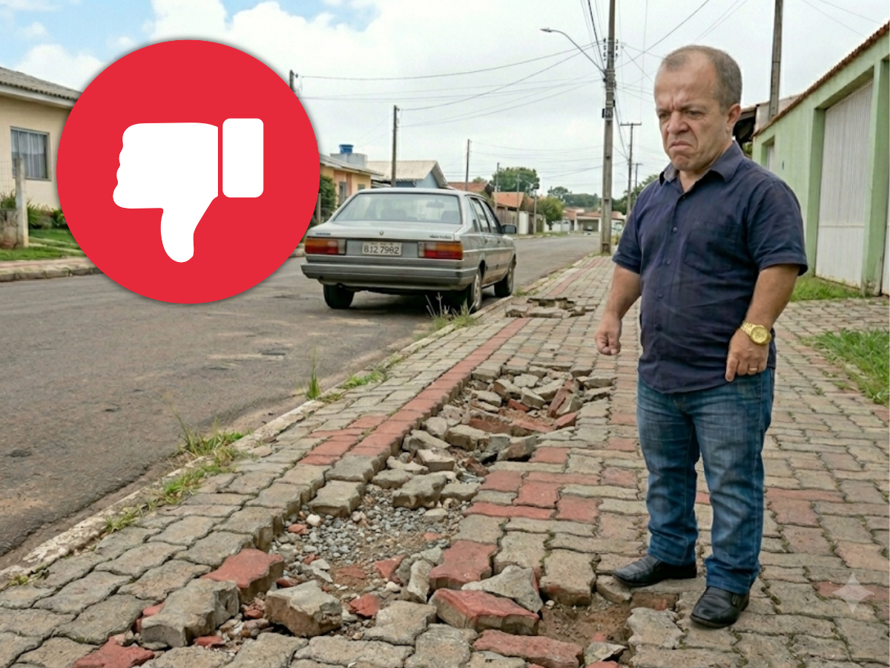
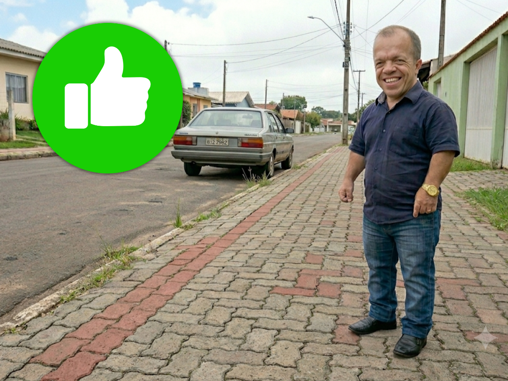
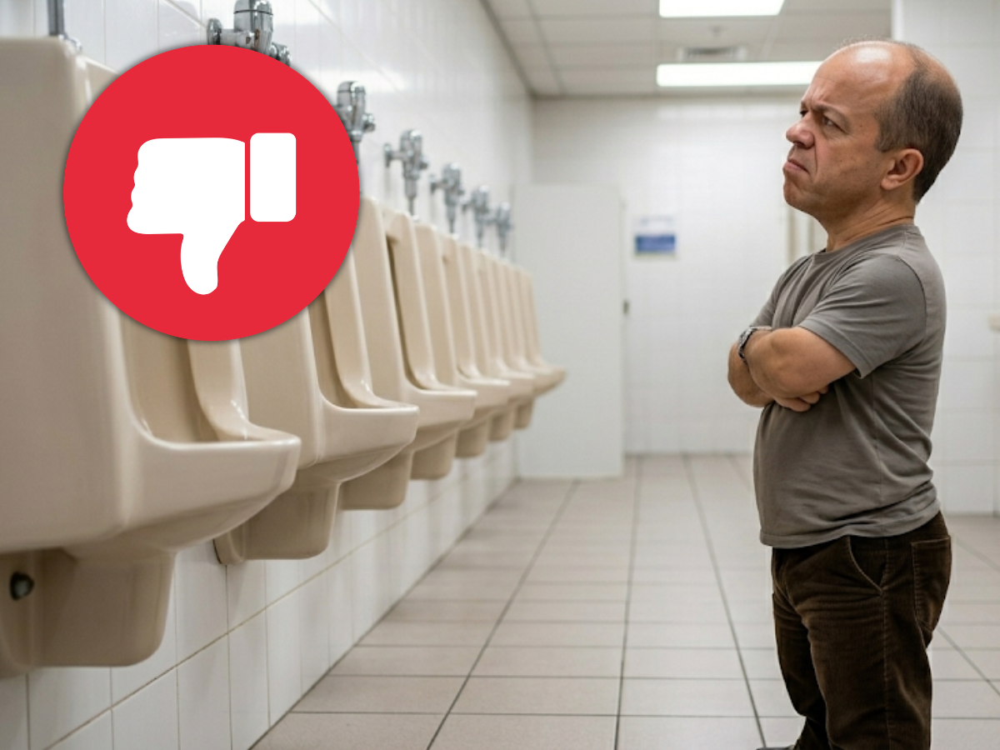
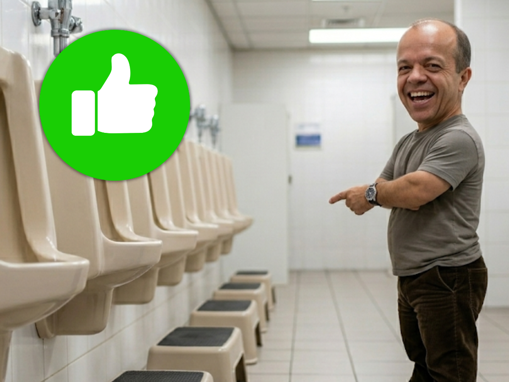
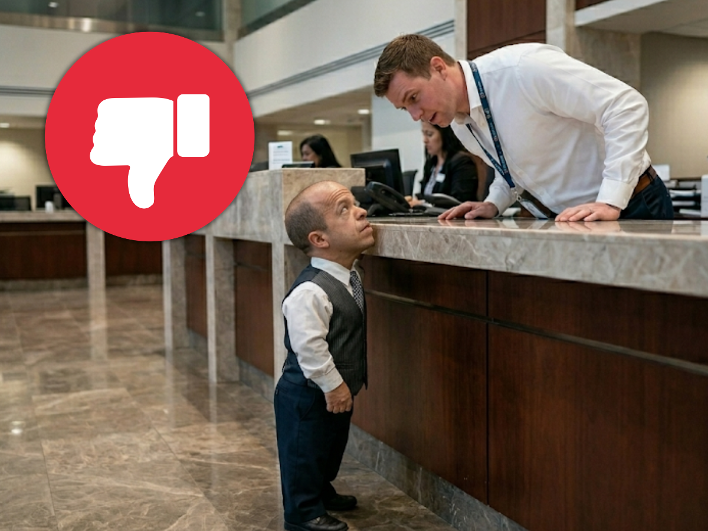
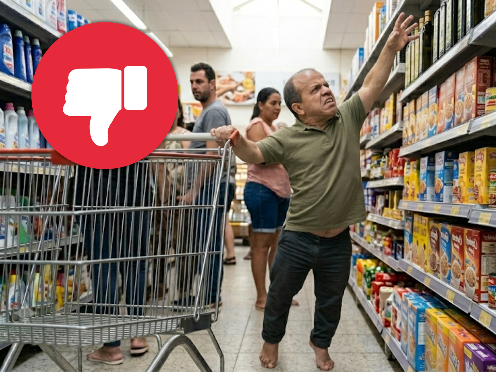
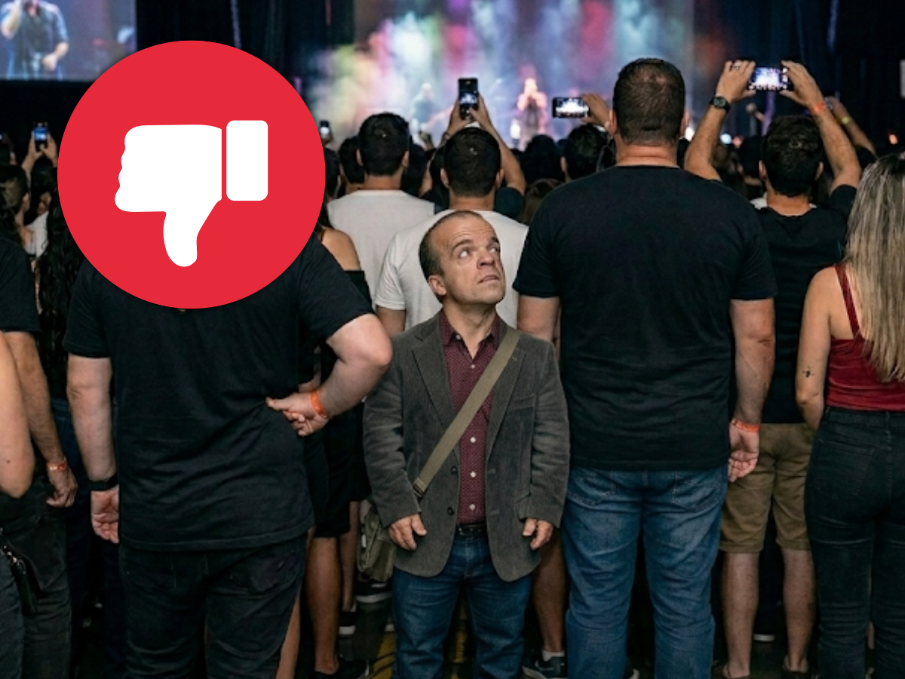

Propostas do Mindinho


Proibição de Calçadas com "Efeito Montanha-Russa"
Multar severamente o proprietário que deixar a calçada com ondulações que façam uma pessoa com pernas curtas parecer que está escalando o Everest para ir à padaria.
Lei do Banheiro Sem Salto Mortal
Fim dos vasos sanitários "padrão trono de rei" em prédios públicos. Banheiros onde a pessoa precisa de impulso para subir ou onde as pernas ficam balançando no vácuo são um descaso e devem ser adaptados para não serem multados.


Mindinho Fiscaliza
O próprio mindinho usará sua vivência para fazer uma websérie nas redes sociais e jornais testando a acessibilidade da cidade, tanto para pessoas com nanismo, quanto para pessoas com outras deficiências Físicas, convidando participações especiais para o programa. Se o vereador não alcança ou não passa, a prefeitura vai ser notificada, e o orgão ou empresa levará uma multa mensal até o problema ser resolvido!
Essa campanha tem o intuito de motivas empresas e corporações a adaptarem suas contruções para que todas as pessoas consigam acessa-las e usufrui-las da melhor maneira. Mindinho fiscalizará tudo para que nenhuma pessoa passe por constrangimento em público, e garantirá para todos um ambiente acolhedor e sem perrengues por toda cidade!

Balcões Sem Humilhação
Proibir que órgãos públicos tenham balcões de atendimento tão altos que o atendente precise se levantar e debruçar para ver se tem alguém do outro lado. O atendimento deve ser olho no olho, não "olho no topo da cabeça".
Kit Sobrevivência no Supermercado
Exigir que os supermercados disponibilizem "pinças gigantes" para que qualquer um consiga pegar o produto da última prateleira sem precisar escalar as gôndolas como se fosse o Homem-Aranha, e carrinhos adaptados a para pessoas com deficiências, inclusive nanismo.


"Corta-Fila" por Direito de Vista
Em shows e eventos públicos na cidade, pessoas com nanismo ou cadeirantes terão direito à primeira fileira da pista. Assistir ao show inteiro olhando para as costas ou para a bunda do vizinho é imperdoável.